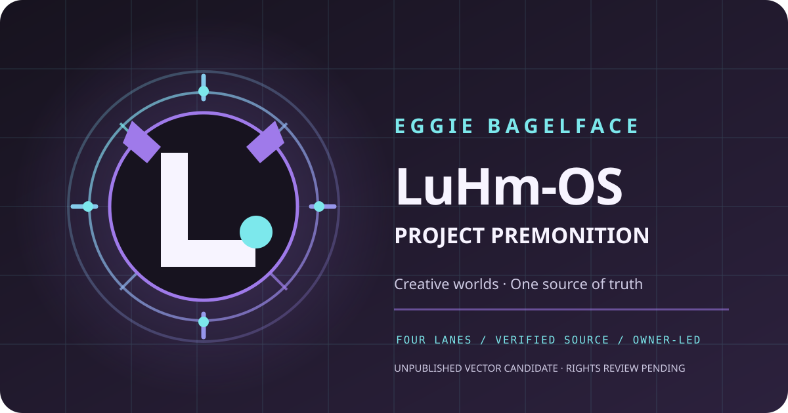

LuHm-OS · Project Premonition · Professor's studioSOURCE-ONLY · NOT A VM BOOT
The Machine Seal
Four architecture lanes, one source of truth. The loader below is a local animation demonstrating the cockpit, not a hypervisor, kernel, Docker guest, or live deployment.

LuHm-OSProject Premonition · Candidate vector artPublished brand approval: HOLD
LUHM-OS :: PREMONITION
BOOT SOURCE [ PROPOSAL ONLY ]
HYPERVISOR [ NOT CONNECTED ]
KERNEL [ NOT BOOTED ]
STAGE [ WAITING FOR HUMAN START ]
0% simulated presentation
Opening the Godot web harness is a user-initiated remote page load from a previously deployed Render web service. Its availability and compatibility must be verified in your browser; it is not the new proposal's VM.
Evidence status
GitHub sourceREQUIRES EXACT CI
Current LuHm pluginREAD-ONLY UI
Historical Godot hostRENDER WEB SERVICE
VM guest / kernel bootNOT PROVEN
Samsung app installNOT PROVEN
Art publication rightsHOLD
4×4 architecture seal
HEXsource
HEXtest
HEXhost?
HEXowner?
SVGsource
SVGtest
SVGhost?
SVGowner?
BRANDsource
BRANDtest
BRANDhost?
BRANDowner?
VMsource
VMtest
VMhost?
VMowner?
Historical Godot web viewer · optional
Only this previously documented, allowlisted host may load. If framing is refused, use the external link instead.
Open historical Godot web harness in a separate browser tab ↗